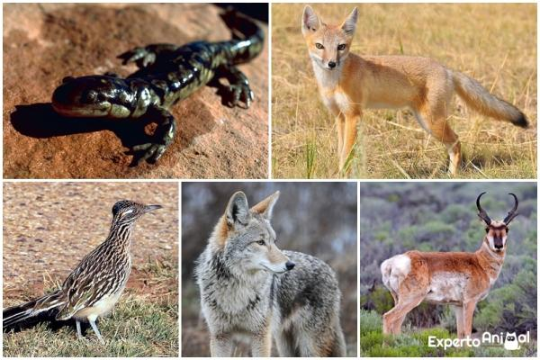

La ecología es la ciencia que estudia la relación que tienen los seres vivos con el medio que habitan. En específico estudia como influye el medio en su distribución, abundancia, biodiversidad, comportamiento, ls interacciones que se obtienen entre distintas especies y las modificaciones que pueden ocasionar en el medio. Sus niveles de estudio son a nivel de organismos, poblaciones y comunidades de poblaciones que conforman los ecosistemas y la biosfera en general
Sin embargo, con el tiempo extendió el concepto hasta abarcar el análisis de las propiedades del medio, incluyendo el desplazamiento de materia y energía y su evoución a raíz de la presencia de conjuntos biológicos. En la actualidad y desde hace varios años, la ecología se encuentra muy relacionada con un heterogéneo movimiento político y social que intenta actuar en defensa del medio ambiente, la vida silvestre y la biodiversidad.
La ecología presenta una gran cantidad de ramas, pero entre las más importantes se encuentran:
Se refiere al estudio de los microorganismos en su hábitat.
Estudia la interrelación de dos grandes ciencias: la geografía y la biología.
Analiza la relación entre el hombre y el medio, tomando al ser humano siempre en un contexto de recreación.
Estudia al conjunto de seres vivos de una misma especie que habitan al mismo tiempo el mismo espacio.
Estudia a los organismos y la relación con su medio aplicando teoremas y fórmulas matemáticas.
Estudia los anillos de crecimiento de los árboles, por lo tanto utiliza la información almacenada en ellos para evaluar el impacto de distintas condiciones ambientales sobre el crecimiento de los árboles.
Si el párrafo anterior lo ponemos en concepto de acuerdo a los niveles de estudio de los que hablábamos al principio del artículo, según los niveles, la ecología estudia:
Estudia cómo los individuos se ven afectados por su medio abiótico y biótico, y cómo influyen sobre éste.
Se ocupa de la presencia o ausencia de ciertas especies, de su abundancia o escasez y cómo oscila el número de individuos de una especie. Las poblaciones pueden estudiarse observando organismos individuales para luego aplicar sus características a las poblaciones o pueden estudiarse observando directamente las características de dichas poblaciones.
Estudia la composición o estructura de las comunidades y su funcionamiento: cómo se mueve la energía, los nutrientes y otros productos químicos a través de las comunidades. Al igual que al nivel de la población, las comunidades pueden estudiarse observando poblaciones y aplicando sus características al nivel de la comunidad u observando directamente las comunidades.
El conjunto pleno de todos los seres vivos conocidos y las relaciones globales entre ellos.
 Inicio Continuar